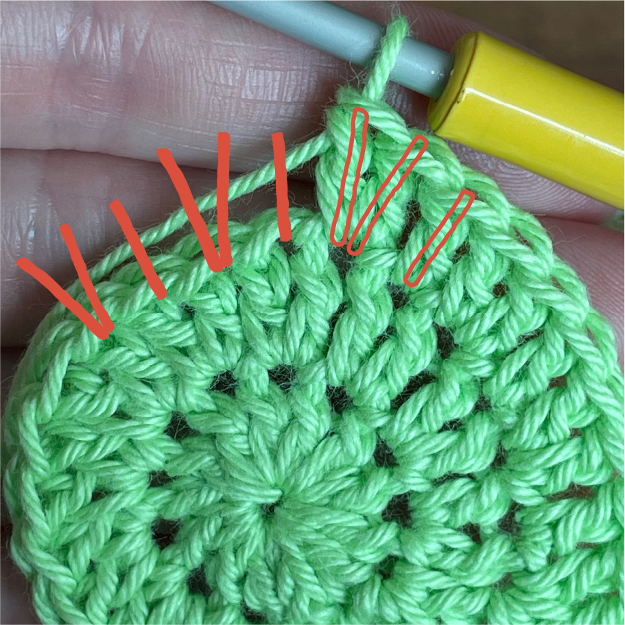
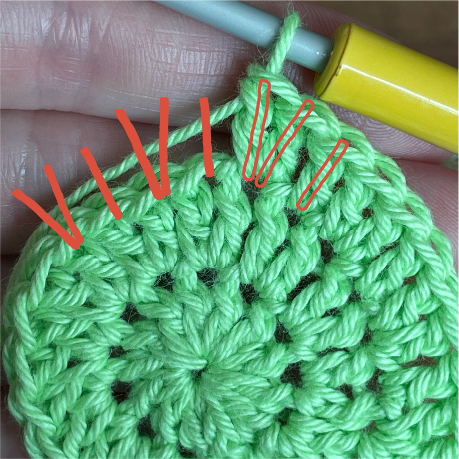

Det kræver heldigvis ikke mange redskaber at komme igang med at hækle, du kan faktisk komme igang med kun 2 ting - En hæklenål og noget garn. Og begge dele er også nemme og billige at få fat på.
Hæklenåle kommer i forskellige størrelser og med forskellige greb.
Når du følger en hækleopskrift, vil det altid fremgå hvilken størrelse din hæklenål skal have sammen med den garntype der skal bruges til den specifikke opskrift. Størrelsen er angivet i mm og vil som regel også fremgå på de hæklenåle du køber.
De forskellige greb på hæklenålen er en smagssag, hvilken ligger bedst i din hånd og hvad synes du selv er rarest at holde på, når du hækler.
Der findes mange forskellige slags garn og de varierer i materiale, tykkelse og selvfølgelig farve.
Igen vil det som regel fremgå af en hækleopskrift hvilket garn der benyttes sammen med hvilken nål til den specifikke opskrift.
Her kan det dog være en kæmpe fordel at sætte sig ind i det der hedder løbelængder. Mange opskrifter på nettet henviser nemlig til et bestemt mærke af garn, men hvis du af den ene eller anden grund ikke har mulighed for at bruge præcis det samme garn, kan du selv finde et alternativ
Maskemarkører er små sikkerhedsnåle, du kan bruge til at markere forskellige masker i dit arbejde. Du kan eksempelvis sætte en markør i den første maske når du hækler rundt i en cirkel, for at markere start/slut.
En stoppenål bruges til at “hæfte ender”, som betyder at sy de løse snore af garn ind i arbejdet, når du er færdig med projektet, så det ikke bliver trevlet op.
Et målebånd kan hjælpe dig til at tjekke om dit projekt har den rette størrelse undervejs i projektet, især hvis du arbejder på beklædningsgenstande.
Hvis det er allerførste gang du sidder med en hæklenål i hånden, kan det være en god idé lige at lave en lille hækleprøve, for at forstå, hvodan man holder nålen og garnet, samt en følelse af nogle forskellige masketyper.
Nålen kan holdes på lidt forskellige måder, men Frogg anbefaler at holde nålen lidt ligesom du ville holde en kniv, når du skærer ud på din tallerken.
Medmindre du skal lave en magisk ring, som forklares herunder, skal du starte med at lave en løkke af dit garn, som du kan sætte på nålen. Dette gøres ved at lave en knude med garnet, men ikke trække den korte ende igennem knuden, se videoen nedenfor. Husk at efterlad ca. 15 cm af garn, når du laver løkken til at hæfte enden, når du er færdig med projektet.
 

Der er primært 2 måder at starte et hækleprojekt på - en luftmaskekæde eller en magisk ring.
Med en luftmaskekæde, laver man en række luftmasker i den længde der ønskes og kan derefter hækle frem og tilbage langs denne række for at lave et flat stykke, eller samle kæden til en cirkel, der herefter kan hækles rundt på, eller frem og tilbage for at skabe en cylinderform.
Den magiske ring - den kræver altså ingen magi - benyttes som regel i projekter der skal hækles runde former, eksempelvis en brødkurv, eller en bamsekrop. Der er mange forskellige måder at starte ringen på, men de bunder alle i samme princip og gør det muligt at starte et projekt i en helt tæt lille ring og derefter hækle rundt og rundt derudad.
Den første række eller omgang, efter du har lavet din luftmaskekæde eller magiske ring, kan for nogle være lidt svær at gennemskue.
For rigtigt at forstå, hvorfor man gør som man gør, kan det hjælpe at sætte sig ind i de forskellige maskers “højde”.
Maskerne har nemlig forskellige højder, en fastmaske er ikke ligeså høj som en stangmaske. Når man starter en ny omgang eller række, kan man ikke starte med den masketype, der egentlig skal hækles hen ad hele rækken. I stedet starter man med luftmasker i det antal der passer til masketypen, som erstatter den første maske på rækken/omgangen.
Når du ved hvilken masketype du skal lave hen ad rækken/omgangen, skal du finde det tilsvarende antal luftmasker. Disse kan også kaldes vendemasker og det er de luftmasker du skal lave hver gang du starter en ny række/omgang.
Lad os sige at du skal hækle stangmasker på din første omgang eller række. En stangmaske svarer til 3 luftmasker i højden.
Alt efter opskriften skal du ved en luftmaskekæde enten tilføje de 3 ekstra luftmasker til at vende arbejdet med, men andre gange er der taget højde for vendemaskerne i antallet af luftmasker der er angivet. Det vil som regel fremgå i teksten
Når de 3 vendemasker er lavet skal den første stangmaske laves. For at gøre brug af de 3 vendemasker, skal den første stangmaske derfor placeres i 4. luftmaske fra nålen, således af de 3 luftmasker er frie. Herefter kan der fortsættes med stangmasker hele vejen til start.
Skal du lave første omgang i en magisk cirkel, eller har du lukket luftmaskekæden til en cirkel, gælder samme princip med vendemasker, når du herefter skal lave første omgang. Her har du dog lukket den magiske ring eller luftmaskekæden tog skal altså herfra hækle 3 luftmasker opad. Herefter kan du lave den første stangmaske i den første maske og fortsætte rundt.